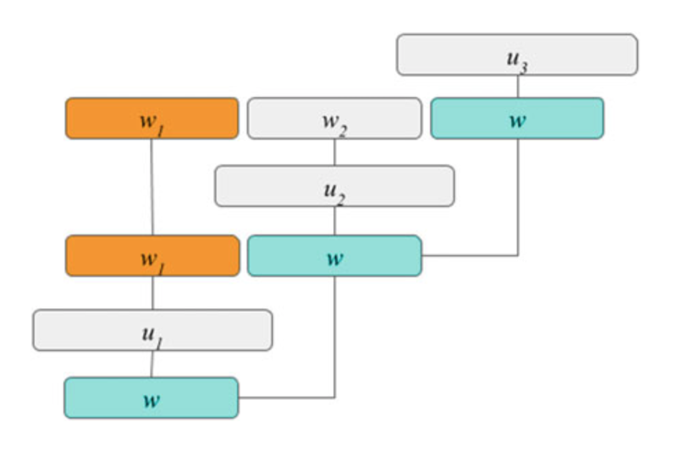

从统计建模到深度学习
域检测与意图确定
深度信念网络(deep belief networks, DBNs)是一堆受限的Boltzmann机，是可以在无监督情况下进行有效训练的双层网络。
深度凸网(deep compex net, DCN)是一种规则的前馈神经网络，输入向量也被考虑在每个隐藏层。在准确率、性能和可拓展性上优于DBN。DCN架构如下图，W为输入，U为权重在给定目标向量t的情况下，损失函数为均方差，使用DBN进行预训练。

现在的技术水平下，通常用卷积神经网络(convolutional neural networks, CNNs)。
过滤器U被应用于输入句子中h个单词的窗口，从而产生一个新的特征ci。例如
其中其中b为偏差，W为单词输入向量，ci为新特征。然后，在c = [c1, c2，…]上应用max-over-time池操作。,cn−h + 1]最大的价值功能,cˆ= maxc。这些特征值被传递到softmax层，其输出为标签的概率分布：
之后还有人建立了复发神经网络(recurrent neural networks, RNN)编码器，进行前馈网络训练并与常规CNN进行比对。也有不进行前馈或者卷积神经网络进行语音识别的，简单地使用RNN编码器对句子末尾标记对类进行解码的语句进行建模。因为没有与CNN和DNN进行结果对比，具有良好拓展性，可以很容易的拓展成双向RNN，加载句首作为类(“load the begin-of-sentence token as the class”)。